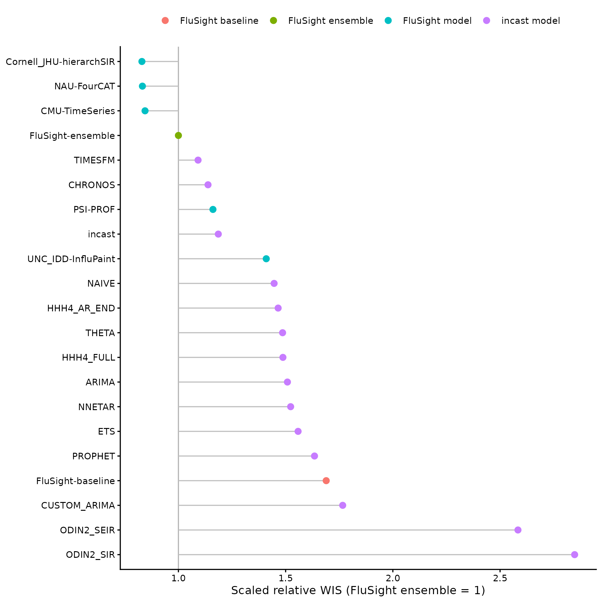
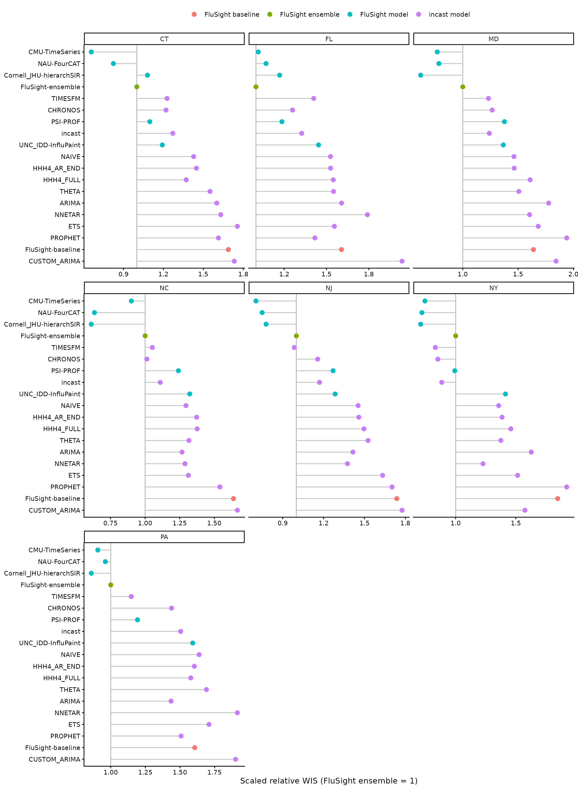

Overview
This vignette replays the 2025–26 US FluSight
season as if incast had submitted each week.
The evaluation covers:
- 7 states: Connecticut, Florida, Maryland, New Jersey, New York, North Carolina, and Pennsylvania;
- 27 forecast rounds from November 22, 2025, through May 23, 2026; and
- weekly incident influenza hospital admissions at horizons 0–3.
Model fitting is not run when the vignette is built. Packaged forecasts and scores keep the plots fast and reproducible.
Use the saved forecasts
The backtest is available as flusight_forecasts:
flusight_forecasts |>
select(model_id, reference_date, horizon, location, output_type_id, value) |>
head()
#> # A tibble: 6 × 6
#> model_id reference_date horizon location output_type_id value
#> <chr> <date> <int> <chr> <chr> <int>
#> 1 NAIVE 2025-11-22 0 09 0.025 3
#> 2 NAIVE 2025-11-22 0 09 0.25 7
#> 3 NAIVE 2025-11-22 0 09 0.5 11
#> 4 NAIVE 2025-11-22 0 09 0.75 17
#> 5 NAIVE 2025-11-22 0 09 0.975 37
#> 6 NAIVE 2025-11-22 1 09 0.025 1Save a Hubverse-format CSV for myRespiLens:
write.csv(flusight_forecasts, "incast.csv", row.names = FALSE)The data contain every candidate that fitted successfully. For each
state and round, the three candidates with the lowest cross-validation
weighted interval score (WIS) are combined with equal weights and stored
as model_id = "incast".
Backtest design
Reconstruct the data available at each deadline
A FluSight round is indexed by a Saturday
reference_date, but its submission deadline was the
preceding Wednesday. Horizon 0 predicts the week ending on the reference
date; horizons 1–3 predict the following three weeks.
For a round with reference date
,
the backtest uses only surveillance records with
as_of <= d - 6 days. For example, the November 22, 2025,
round uses data released by November 16. This reproduces the revision
state available before the November 19 submission deadline and prevents
future revisions from leaking into model selection. No reporting-delay
adjustment is applied.
This unevaluated code retrieves the revision history:
Select a model independently for each state and round
For each round:
- Use dates 52, 104, and 156 weeks before the current reference date to represent the same period in the three previous seasons.
- Use that week and the next two weeks as nine cross-validation origins.
- At each origin, fit every candidate using only earlier observations and score its four-week forecast against the latest values available for that round.
- Select the three lowest-WIS candidates separately for each state.
- Refit every candidate to the current data and combine the selected
three using an equal-weight linear pool. Save this ensemble as
incast.
The candidates include the four defaults, plus ARIMA, HHH4, Prophet, neural network, mechanistic and foundation models:
library(fable)
library(fable.prophet)
library(igraph)
library(incast.odin)
library(reticulate)
library(surveillance)
locations <- read.csv(
paste0(
"https://raw.githubusercontent.com/cdcepi/FluSight-forecast-hub/",
"v1.2.0/auxiliary-data/locations.csv"
)
) |>
as_tibble() |>
filter(abbreviation %in% states)
population <- locations |>
mutate(population = population / sum(population)) |>
pull(population, name = abbreviation)
neighbourhood <- graph_from_data_frame(
rbind(
c("CT", "NY"),
c("MD", "PA"),
c("NJ", "NY"),
c("NJ", "PA"),
c("NY", "PA")
),
directed = FALSE,
vertices = locations$abbreviation
) |>
as_adjacency_matrix(sparse = FALSE)
annual_seasonality <- addSeason2formula(
f = ~1,
S = 1,
period = round(365.25 / 7)
)
my_models <- c(
default_models(),
list(
CUSTOM_ARIMA = ARIMA(observation ~ pdq(1, 1, 0)),
ODIN2_SIR = odin_sir(observation),
ODIN2_SEIR = odin_seir(observation),
HHH4_AR_END = HHH4(
observation,
control = list(
ar = list(f = ~1, lag = 1),
ne = list(f = ~ -1),
end = list(f = annual_seasonality),
family = "NegBin1"
),
population = population
),
HHH4_FULL = HHH4(
observation,
control = list(
ar = list(f = ~1, lag = 1),
ne = list(f = ~1, lag = 1, normalize = FALSE),
end = list(f = annual_seasonality),
family = "NegBin1"
),
neighbourhood = neighbourhood,
population = population
),
PROPHET = prophet(observation ~ season("year")),
NNETAR = NNETAR(observation),
CHRONOS = FOUNDATION(log1p(observation), "chronos"),
TIMESFM = FOUNDATION(log1p(observation), "timesfm")
)
)The round-level implementation makes the data cutoff and seasonal cross-validation explicit:
cv_seasons <- 2022:2024
reference_dates <- seq.Date(
from = as.Date("2025-11-22"),
to = as.Date("2026-05-23"),
by = "1 week"
)
fcast_round <- function(ref_date) {
ref_date <- as.Date(ref_date)
round_data <- revision_history |>
filter(as_of <= ref_date - 6L) |>
check_data()
last_observed_date <- round_data$window[["to"]]
last_target_date <- ref_date + 3L * 7L
stopifnot(last_observed_date < ref_date)
# Forecast far enough to return horizons 0--3 even when reporting lags.
forecast_steps <- as.integer(
last_target_date - last_observed_date
) %/%
7L
aligned_weeks <- seq.Date(
from = ref_date,
by = "-52 weeks",
length.out = length(cv_seasons) + 1L
)[-1L]
cv_origins <- sort(c(
aligned_weeks,
aligned_weeks + 7L,
aligned_weeks + 14L
))
cv <- get_cv(
round_data,
h = 4,
origins = cv_origins,
models = my_models
)
get_fcast(cv, h = forecast_steps, top_n = 3)$hub$model_out_tbl |>
transmute(
model_id = if_else(model_id == "ENSEMBLE", "incast", model_id),
reference_date = ref_date,
target,
horizon = as.integer(target_end_date - ref_date) %/% 7L,
location = locations$location[match(location, locations$abbreviation)],
target_end_date,
output_type,
output_type_id,
value = round(value)
) |>
filter(horizon %in% 0:3)
}
data.table::setDTthreads(1L)
rounds <- lapply(reference_dates, function(ref_date) {
tryCatch(
fcast_round(ref_date),
error = function(e) {
warning("Round ", ref_date, " failed: ", conditionMessage(e))
NULL
}
)
})
flusight_forecasts <- bind_rows(rounds)
write.csv(
flusight_forecasts,
file.path("data-raw", "incast.csv"),
row.names = FALSE
)Scoring results
The saved forecasts were scored with
hubEvals::score_model_out() against the FluSight v1.2.0
target data. Scores are scaled relative to
FluSight-ensemble. Lower WIS is better, and scaled relative
WIS below one indicates better performance than the ensemble.
Only the five quantiles available for every model (0.025, 0.25, 0.5, 0.75, and 0.975) are scored. Consequently, this is a like-for-like comparison among the models shown here, but it is not the official FluSight evaluation based on the Hub’s complete quantile grid.
The plot includes the FluSight ensemble, the naive
FluSight-baseline, the three best individual FluSight
models, and the models ranked nearest the 50th and 75th percentiles.
Ranks use pooled scaled relative WIS across seven states, among
submissions covering at least 90% of the scored forecasts. Note that the
top three are identified with hindsight; only the ensemble and baseline
were available in real time.
plot_scores <- function(x) {
x |>
mutate(model_order = reorder(model_id, -wis_scaled_relative_skill)) |>
ggplot(aes(
x = wis_scaled_relative_skill,
y = model_order,
colour = model_group
)) +
geom_vline(xintercept = 1, colour = "grey70") +
geom_segment(aes(xend = 1, yend = model_order), colour = "grey75") +
geom_point(size = 2.5) +
labs(
x = "Scaled relative WIS (FluSight ensemble = 1)",
y = NULL,
colour = NULL
) +
theme_classic() +
theme(legend.position = "top")
}
flusight_scores |>
filter(display) |>
plot_scores()
Performance varies by state. Points left of the vertical line
outperform the FluSight ensemble. The two odin2 candidates
are omitted here: they are not well parameterised, and their extreme
state-level scores would stretch the facet scales. Neither CHRONOS
nor TIMESFM
could have been pretrained on the 2025–26 evaluation wave.
flusight_scores_by_location |>
filter(display) |>
plot_scores() +
facet_wrap(~state, scales = "free_x")
Recomputing the saved results
Run data-raw/FluSight-backtest.R to refit the backtest
and write data-raw/incast.csv. The script caches each
round’s cross-validation object so future changes to top_n
are faster. It then packages the forecasts and recomputes the score
tables automatically.
The model-fitting chunks use eval = FALSE. Run them only
to regenerate the backtest.